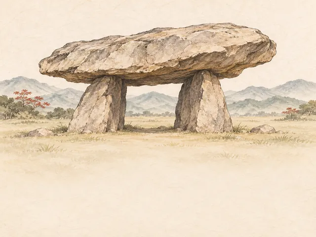
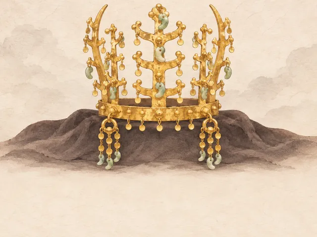
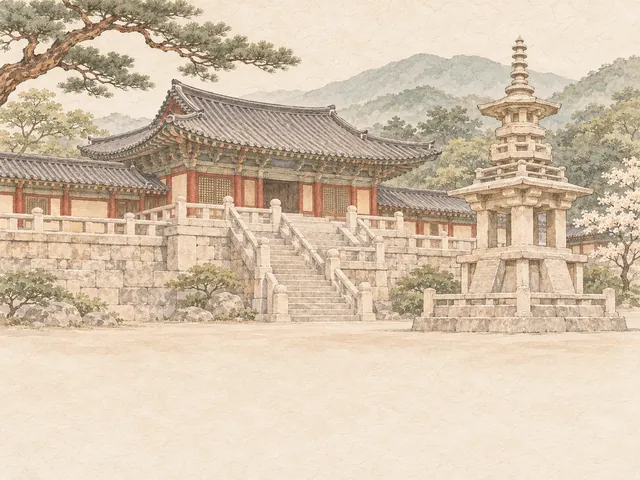
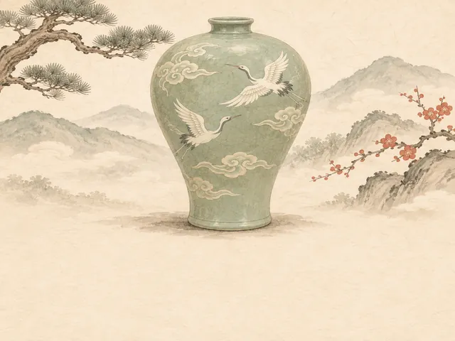
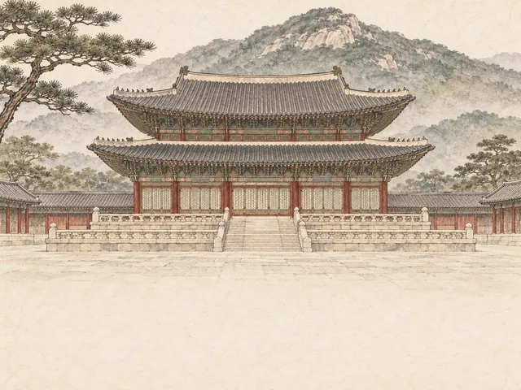
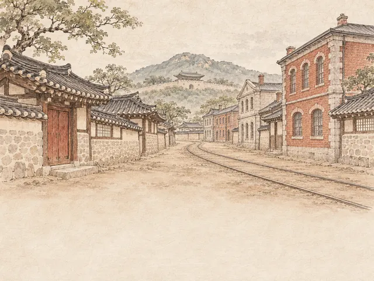
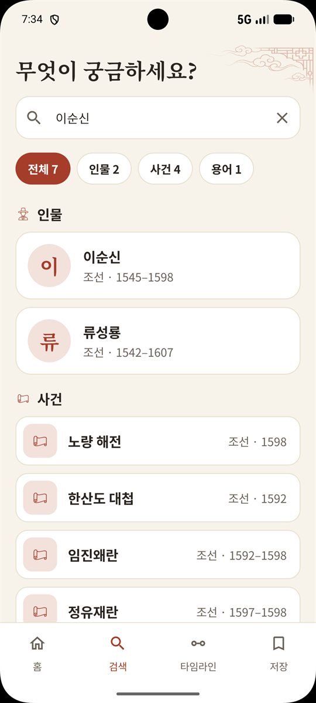
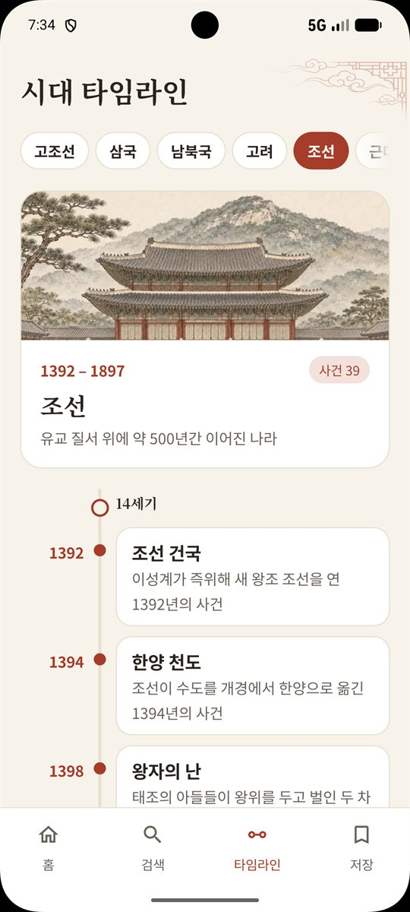
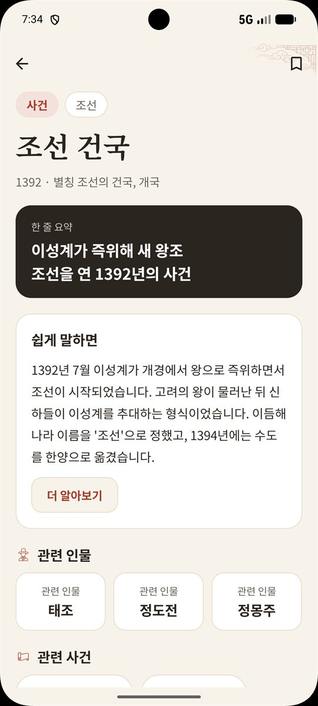
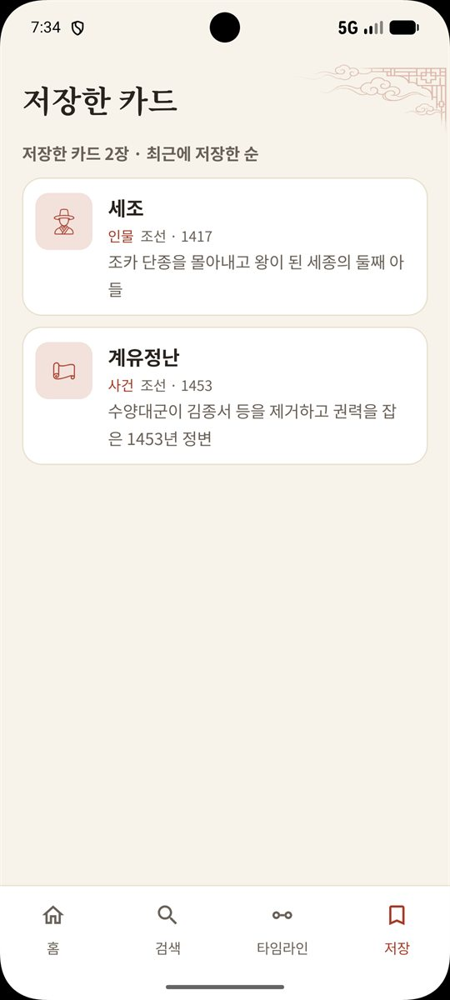

초성·별칭으로 바로 찾기
이름이 가물가물해도 초성만 치면 됩니다. 수양대군처럼 다른 이름으로 찾아도 세조가 나와요.
ㅅㅈ → 세조 · 성종 · 숙종수양대군은 왜 세조가 되었을까? '대감'과 '영감'은 뭐가 다를까? 사극·영화·여행·뉴스에서 생긴 한국사 궁금증을 인물·사건·용어 카드로 쉽게 풀어 드립니다.
이럴 때 찾아보세요
질문을 눌러 보세요. 앱에서는 이렇게 한 줄 요약부터 보여 드려요.
한국사 노트로 할 수 있는 것
교과서처럼 처음부터 외우지 않아도 괜찮아요. 궁금한 순간에서 시작하면 됩니다.
이름이 가물가물해도 초성만 치면 됩니다. 수양대군처럼 다른 이름으로 찾아도 세조가 나와요.
ㅅㅈ → 세조 · 성종 · 숙종보고 있는 드라마·영화의 배경 시대와 실존 인물, 알고 보면 더 재미있는 포인트를 "작품에서는 / 기록에서는"으로 차분히 정리했어요.
결말과 겹치는 내용은 접어 두었어요한 줄 요약 → 쉽게 말하면 → 더 알아보기. 대부분의 궁금증은 첫 두 단계에서 풀립니다.
한 줄 요약부터 읽기인물에서 사건으로, 사건에서 용어로. 관련 카드를 눌러 계속 이어 읽고, 탭 한 번이면 처음으로 돌아와요.
세조 → 계유정난 → 단종 → 사육신오늘과 날짜가 맞는 인물·사건을 홈에서 보여 드려요. "N년 전 오늘" 무슨 일이 있었는지 하루 한 장씩.
음력 날짜도 오늘에 맞춰서다시 보고 싶은 카드는 저장하세요. 저장한 카드와 최근 본 카드는 휴대폰 안에만 보관됩니다.
회원가입·로그인 없음시대 타임라인
시대를 고르면 그 시대의 사건이 연도순으로 이어집니다. 옆으로 넘겨 보세요.

우리 역사에서 가장 오래된 나라

고구려·백제·신라가 겨루던 시대

통일신라와 발해가 남북에 나란히 있던 시대

불교와 문화가 꽃피고 몽골의 침입을 겪은 시대

유교 질서 위에 약 500년간 이어진 나라

대한제국과 일제강점기, 광복을 위한 노력
광복과 대한민국 정부 수립 이후의 시대
작품 속 역사
작품의 배경 시대와 실존 인물을 카드로 연결했어요. 줄거리가 아니라 역사 사실 위주로 담았습니다.
작품 제목은 소개를 위해서만 썼습니다. 한국사 노트는 소개된 작품의 제작사·방송사와 관련이 없습니다.
화면 미리 보기
은은한 한지 바탕과 단청 빛 포인트로, 오래 읽어도 눈이 편하게 만들었어요. 다크 모드도 지원합니다.



